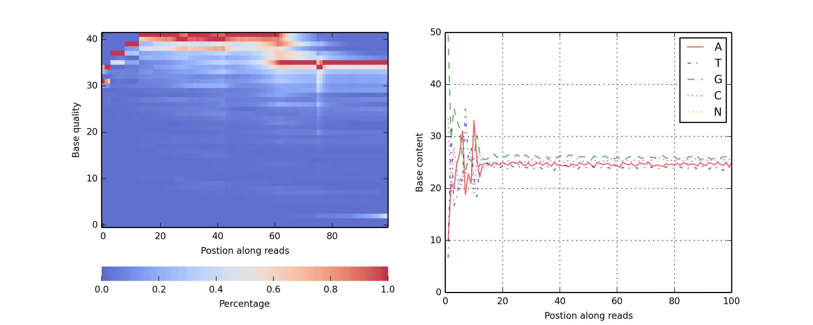
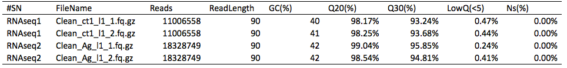

高通量测序（如Illumina HiSeq 2000/Miseq等测序平台）测序得到的原始图像文件经碱基识别（Base Calling）分析转化为测序序列（Sequenced Reads），结果以FASTQ文件格式保存，其中既包含了测序序列信息，又包含了各碱基对应的测序质量信息。
测序样本中真实数据随机截取结果如下：
@HISEQ:366:H8RBJADXX:2:1101:1383:2233 1:N:0:CATTTT
TAACGGTTGGACGATAGTAAAAAGTCATAGCAAAACCTGTAGCTACTTGTACTAAAAAACAAGTAAGTGTGATCCCCCCTAAACAATAAAATATGTTGAC
+
B@CFFFFFHHHFFFHIIHJJIIIGHIIIHIJJIJIIJJJJJJJIIGIJJHHJIJIJIJIHGHHADDFBCBDCDEEEDDDDDCDDDDDDDDDEDEECDDCD
@HISEQ:366:H8RBJADXX:2:1101:1402:2233 1:N:0:CATTTT
TCCAGTTTACCCACTACTGTACCCGCGTGAATATGATCTCCACCAGACATACGTAATGCTTTAGCTAGTACACGAAAATGCATACCATGATTTTTCTGTC
+
==8DBB?DH?DFDGGIEIII@D:EBGH@DDFG>BBBF9DD3BFEH;B;FGGG@F;(;CA=CEE:A?E>CDED>?=A@/5;@CCA@9A@A@CDECCCCCC@
质量与错误率换算公式：
详见：Cock, P.J.A., et al. (2009) The Sanger FASTQ file format for sequences with quality scores, and the Solexa/Illumina FASTQ variants, Nucleic Acids Research, 38, 1767-1771.
测序错误率与碱基质量有关，受仪本身、试剂样品等多个因素共同影响。通常测序错误率与碱基质量有关，受仪本身、试剂样品等多个因素共同影响。通常序列（Reads）5’端前几个碱基的错误率相对较高,随着序列的延伸，3’端碱基错误率会不断升高，这是由通量测序的技术特点决定。
此外，对于RNA-seq来说，因随机性打断及G/C，和 A/T含量分别相等的原则，理论上GC及AT含量在每个测序循环上应分别相等，且整过程稳定不变呈水平线。

左图：横坐标为reads的碱基位置，纵坐标为单碱基质量。
右图：横坐标：测序reads碱基位置; 纵坐标：单碱基所占比例
样本测序产出数据质量评估表：

Reads：由测序得到的原始图像数据经base calling转化而来的原始序列reads。
ReadLength：测序reads长度，总测序量 = Reads * ReadLength
GC：G+C的数量占总的碱基数目的比例
Q20：测序base质量>20 的比例，即错误率 < 1%（Q20：表示测序错误率为1%）
Q30：测序base质量>30 的比例，即错误率 < 0.1%（Q20：表示测序错误率为0.1%）